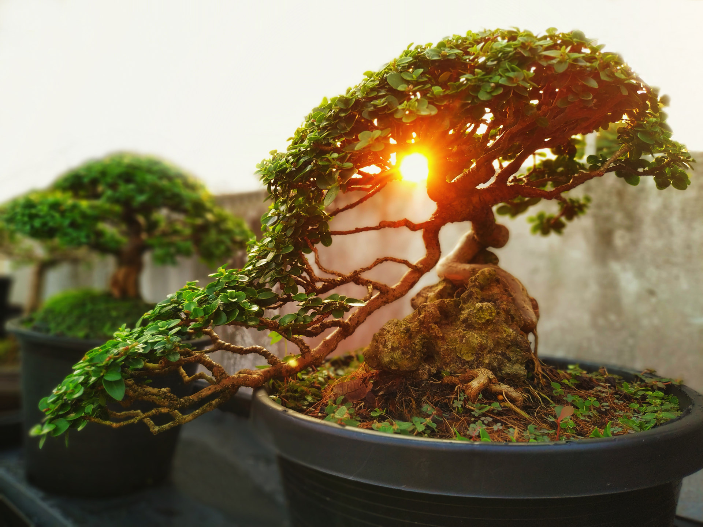
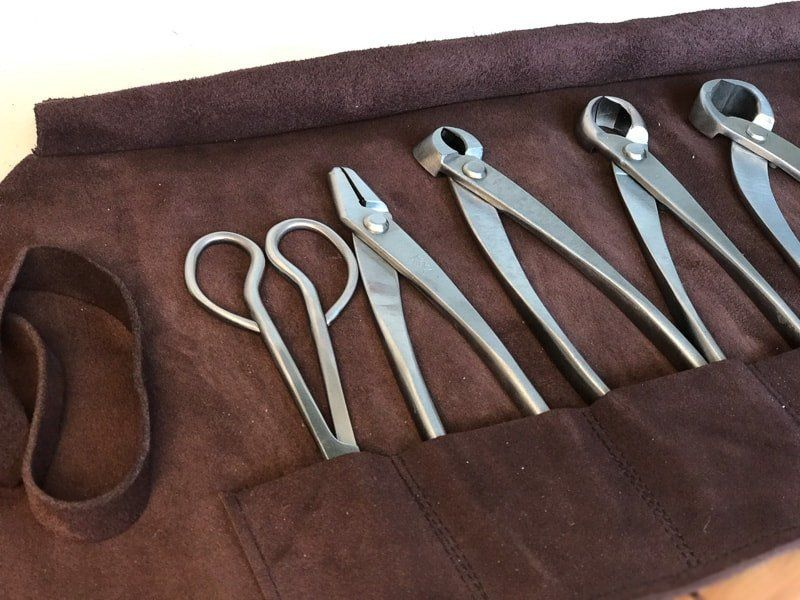

Where you’ll welcome your new plant!
Is your office or home missing something? Does your quarters look dull and boring? Have no fear because Bonsai Bob’s is here to help introduce new life and color into your environment. Here at Bonsai Bob’s we have a wide variety of bonsai trees to choose from. Big or small; exotic or traditional; you cannot go wrong with our selection. Or you can start out fresh by choosing any of our pre‐assembled kits or personalize your own.
- What bonsai tree should I choose?
- There are many different species of bonsai trees out there varying widely in size and style. It all depends on what catches your attention. Start by looking at our selection under the Bonsai link.
- What comes in the pre‐assembled kits?
- Our pre‐assembled kits come with a pruning tool, soil disks, burlop pots, seed packets, plant makers, and a starter learning guide.
- How to personalize my own kit?
- Browse our supplies link to see the different opnions for pruning tools, soil, pots, and seed packets.
